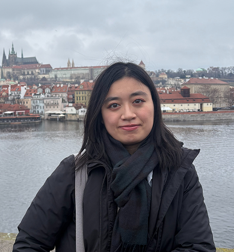
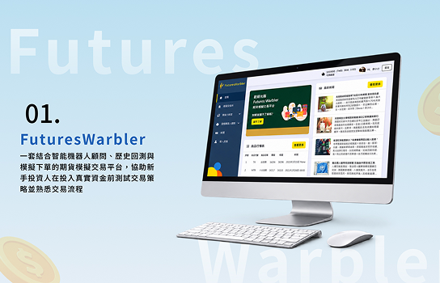
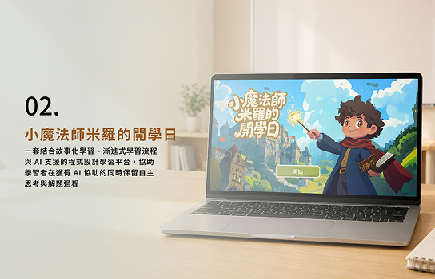
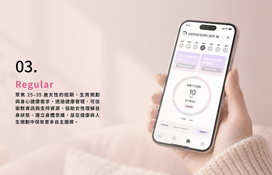

About Me

具備資訊管理與互動設計的跨領域背景，累積使用者研究、需求分析、產品規劃與專案協作等實作經驗。擅長從不同角度理解問題、整合資訊，並結合設計思維與技術理解，將需求轉化為具體可行的方案。
學習經歷
國立臺北科技大學
互動設計系碩士班
2023.09–2026.08Hochschule Darmstadt
Expanded Media 交換生
2025.09–2026.02輔仁大學
資訊管理學系學士
跨域醫療服務設計思考微學程
獲獎經歷
- UX Design Awards 2025第一階段新人獎提名
- AI Junior Award 2024入圍複賽
- 2023 InnoConnect+ 全國服務創新跨界共創大賽企業銀獎
- 2022 全國大專院校智慧創新暨跨域整合創作競賽電商與金融科技組 第三名
- 2022 北祥黑客松銅賞
實習與活動經驗
2024 OpenHCI 工作坊
設計教學助教
2024.06–2024.07波利馬資訊科技有限公司
六角學院平台
前端程式設計遠端實習助教
軟體
- Figma
- Illustrator
- InDesign
- Premiere Pro
- Adobe XD
- Python
- HTML
- CSS
- Power BI
技能
產品規劃與專案管理
- 需求分析與競品分析
- 產品功能規劃與優先順序安排
- User Story 撰寫
- 敏捷開發概念與課程專案實作經驗
- Trello 任務管理、時程規劃與進度追蹤
- 跨領域溝通與協作
使用者研究與介面設計
- 使用者訪談與問卷設計
- 研究洞察整理
- 使用者旅程建構與分析
- User Flow 規劃與資訊架構設計
- Wireframe 與互動原型製作
資料與文本分析
- SPSS 統計分析與問卷資料分析
- Power BI 資料視覺化
- KH Coder 文本分析
- KJ 法與內容分析法
技術實作與 AI 應用
- HTML/CSS 網頁切版與 Bootstrap 應用
- Python 程式實作與機器學習基礎應用
- Git/GitHub 版本控制與協作
- AI 提示詞設計與優化
- Claude Code 輔助功能開發
- 生成式 AI 視覺內容製作（圖像、動畫與影片）
Selected Projects

FuturesWarbler
期貨模擬交易平台
整合智能機器人顧問、歷史回測與模擬下單，協助新手投資人在投入真實資金前測試交易策略，並熟悉交易流程。
VIEW PROJECT

小魔法師米羅的開學日
AI 輔助故事化程式設計與運算思維學習平台
透過故事情境、漸進式學習流程與 AI 支援，引導學習者理解問題並整理程式邏輯，在獲得協助時仍保留自主思考與解題空間。
VIEW PROJECT

Regular
女性身心健康管理 App
聚焦 25–35 歲女性的經期、生育規劃與身心健康需求，透過健康管理、可信衛教資訊與支持資源，協助女性理解自身狀態並保有自主選擇。
VIEW PROJECT
Let's connect.
歡迎交流產品、設計與研究的想法。